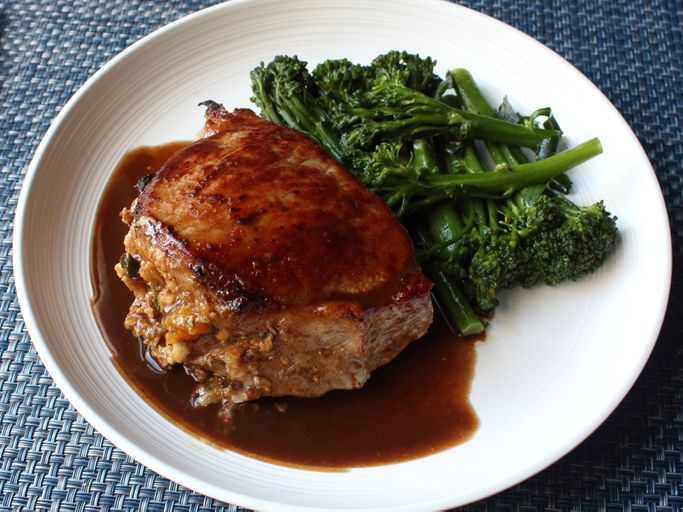

Home
Peach-Stuffed Pork Chops

Description
A visually very impressive dish. The flavouring of the pork chops is done from the inside out,
and hence it is possible to use whatever stuffing you'd prefer, although the peach is definitely
the most delicious.
Ingredients (2 servings)
Stuffing:
- 2 strips bacon, sliced into ¼-inch pieces
- ½ cup diced onion
- 2 tablespoons diced poblano pepper
- 1 large yellow peach, peeled, pitted, and diced
- 8 saltine crackers, crushed
- 2 teaspoons fresh thyme leaves
- ¼ teaspoon freshly ground black pepper
- ¼ teaspoon kosher salt
- 1 pinch cayenne pepper
- 2 tablespoons chicken broth, or as needed (Optional)
Pork Chops:
- 2 double-cut boneless pork chops
- salt to taste
- 1 tablespoon olive oil
- ¼ cup chicken broth (Optional)
- 2 tablespoons balsamic vinegar
- 2 tablespoons salted butter, cold
Directions
- Preheat the oven to 400 degrees F (200 degrees C) with oven rack in center position.
- Cook bacon in a nonstick skillet over medium heat until almost crisp,
about 5 minutes. Add onion and poblano pepper; cook until onion turns translucent, 5 to 6
minutes. Add peach; cook until tender and starting to render some juice. Transfer to a bowl.
- Stir saltines, thyme, black pepper, ¼ teaspoon salt, and cayenne pepper into peach mixture;
add 2 tablespoons chicken broth to moisten as needed. Refrigerate until ready to use.
- Lay pork chops flat onto your work surface. Cut a pocket in center of each pork chop,
starting with a small incision on fat side of chops, exactly halfway down, using the tip of
a knife to cut as close to the edges as possible without poking through. Try to make pocket
incisions at least 2 inches wide.
- Fill pockets with peach stuffing, packing and pressing in firmly; season both sides chops with salt.
- Heat olive oil in an oven-safe skillet over high heat. Add chops; sear until browned on one
side, about 3 minutes. Carefully flip chops and transfer skillet to the oven.
- Bake in the preheated oven until an instant-read thermometer inserted into centers reads
145 degrees F to 150 degrees F (63 to 66 degrees C), about 15 minutes.
- Transfer chops to a plate; cover loosely with aluminum foil.
- Return the skillet to the stovetop; place a towel over the hot handle. Add ¼ cup
chicken broth and balsamic vinegar; bring to a boil while scraping the browned bits
of food off the bottom of the skillet with a wooden spoon. Off heat, stir in butter.
Taste; adjust seasoning if desired. Serve sauce over pork chops.
Chef's Notes
You can use a jalapeño or other green chile pepper instead of a poblano. Feel free to substitute any
fresh fruit you'd like for the peach and any fresh herb for the thyme.
If you like, you can use crumbled bread cubes, bread crumbs, or even cornbread instead of saltine crackers.
Just like you can use any stuffing you want, you can use any liquid and vinegar you like in your sauce.